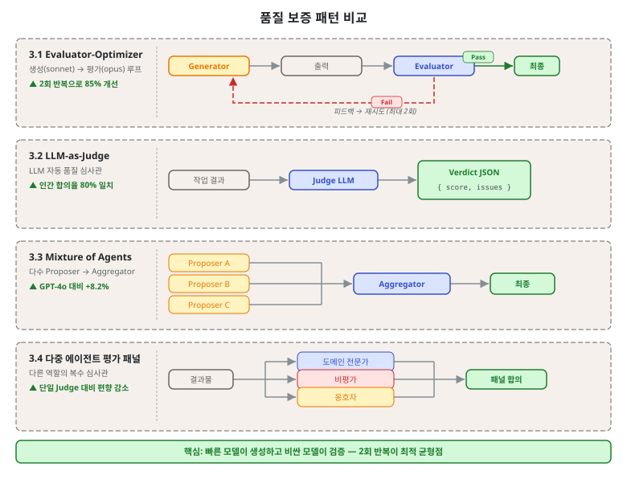
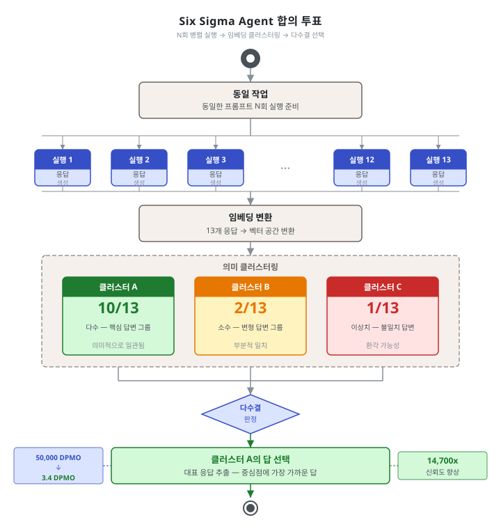

제6단원. 품질 보증 패턴 — 에이전트 출력의 품질 관리¶
학습 목표¶
이 단원을 마치면 다음을 할 수 있다:
- 6가지 품질 보증 패턴의 동작 원리와 효과를 설명할 수 있다
- 작업 특성에 맞는 품질 보증 전략을 설계할 수 있다
- Six Sigma Agent의 14,700배 신뢰도 향상의 수학적 원리를 증명할 수 있다
- Evaluator-Optimizer를 품질 보증 관점에서 심화 적용할 수 있다

멀티에이전트 시스템에서 품질 보증은 단일 에이전트보다 복잡하다. 각 에이전트의 출력이 다른 에이전트에 전달되므로, 하나의 오류가 연쇄적으로 증폭될 수 있다. 이 단원에서는 이를 방지하기 위한 6가지 패턴을 다룬다.
품질 보증 패턴은 2단원의 기본 패턴과 달리, 생산 환경에서의 신뢰성에 초점을 맞춘다. 단순히 좋은 결과를 얻는 것이 아니라, 일관적으로 허용 가능한 품질을 유지하는 것이 목표이다.
6.1 Evaluator-Optimizer (생성-평가 루프) — 품질 보증 심화¶
2단원 2.6에서 Evaluator-Optimizer의 기본 구조를 소개하였다. 이 단원에서는 품질 보증 관점의 심화 적용을 다룬다: 평가 기준 설계 방법론, 반복 횟수 최적화, 실전 안티패턴이다.
2단원과의 차별화¶
| 관점 | 2단원 (기본 개념) | 6단원 (품질 보증 심화) |
|---|---|---|
| 초점 | 패턴 구조와 루프 | 평가 기준 설계 방법론 |
| 반복 횟수 | 수확 체감 원칙 소개 | 최적 반복 횟수 결정 방법 |
| 적용 | 일반적 사용 사례 | 프로덕션 품질 보증 전략 |
| 안티패턴 | 없음 | 4가지 안티패턴 분석 |
평가 기준 설계 방법론¶
모호한 "더 좋게"라는 지시 대신, 구조화된 JSON 평가 기준을 사용해야 한다:
{
"criteria": {
"correctness": {
"weight": 0.4,
"description": "코드가 명세에 맞게 동작하는가",
"pass_threshold": 0.9,
"evaluation_method": "단위 테스트 실행 결과"
},
"security": {
"weight": 0.3,
"description": "보안 취약점이 없는가",
"pass_threshold": 0.95,
"evaluation_method": "OWASP Top 10 체크리스트"
},
"maintainability": {
"weight": 0.2,
"description": "코드가 읽기 쉽고 유지보수 가능한가",
"pass_threshold": 0.7,
"evaluation_method": "복잡도 지표 및 주석 비율"
},
"performance": {
"weight": 0.1,
"description": "성능이 요구사항을 충족하는가",
"pass_threshold": 0.8,
"evaluation_method": "벤치마크 실행 결과"
}
},
"overall_pass_threshold": 0.85
}
평가 기준 설계 원칙: 1. 측정 가능성: 각 기준은 객관적으로 측정 가능해야 한다. "좋은 코드인가"는 측정 불가능하지만, "Cyclomatic Complexity 10 이하인가"는 가능하다. 2. 가중치 합산: 모든 가중치의 합이 1.0이어야 한다. 3. 임계값 차별화: 보안(0.95)은 기능 정확도(0.9)보다 높은 임계값을 적용한다.
최적 반복 횟수 결정¶
2단원에서 "85%가 첫 2회 반복에서 달성된다"는 원칙을 소개하였다. 프로덕션에서는 다음 기준으로 최대 반복 횟수를 설정한다:
class EvaluatorOptimizer:
def __init__(self, max_iterations: int = 3,
quality_threshold: float = 0.85,
improvement_min: float = 0.02):
self.max_iterations = max_iterations
self.quality_threshold = quality_threshold
self.improvement_min = improvement_min # 최소 개선율
def optimize(self, generator, evaluator, task: dict) -> dict:
response = generator.generate(task)
previous_score = 0.0
for i in range(self.max_iterations):
evaluation = evaluator.evaluate(response)
current_score = evaluation["score"]
# 조기 종료 조건 1: 품질 임계값 달성
if current_score >= self.quality_threshold:
return {"result": response, "iterations": i + 1,
"final_score": current_score}
# 조기 종료 조건 2: 개선이 미미한 경우 (수확 체감)
if i > 0 and (current_score - previous_score) < self.improvement_min:
return {"result": response, "iterations": i + 1,
"final_score": current_score,
"note": "개선 한계 도달로 조기 종료"}
# 피드백과 함께 재생성
response = generator.regenerate(task, evaluation["feedback"])
previous_score = current_score
return {"result": response, "iterations": self.max_iterations,
"final_score": current_score}
안티패턴¶
프로덕션에서 자주 발생하는 Evaluator-Optimizer 안티패턴:
- 무한 반복 허용: 최대 반복 횟수 없이 "통과될 때까지" 반복하면 비용이 폭발한다.
- 모호한 평가 기준: "더 나은 코드로 수정하라"는 지시는 평가자가 일관성 없는 피드백을 생성한다.
- 같은 모델 사용: 생성자와 평가자에 같은 모델을 사용하면 자기 편향(self-bias)이 발생한다. 반드시 다른 모델 또는 다른 역할을 사용해야 한다.
- 피드백 누적 없음: 매 반복에서 새 피드백만 전달하고 이전 피드백을 버리면, 에이전트가 이전에 수정한 내용을 다시 되돌린다.
6.2 LLM-as-Judge¶
개념¶
LLM을 자동화된 품질 심사관으로 활용한다.
성능 수치¶
| 지표 | 수치 |
|---|---|
| 인간 선호도와의 합의율 | 80% (인간 간 일치율과 동등) |
| 인간 대비 비용 | 500~5,000배 절감 |
| 한계 | 전문 도메인의 사실 정확도 평가에서 약함 |
실무 배합¶
Anthropic의 평가 방법론¶
Anthropic의 연구팀은 LLM-as-Judge에 대해 다음과 같은 구체적 기준을 사용하였다:
- 사실 정확도: 주장이 출처와 일치하는가?
- 인용 정확도: 인용된 출처가 주장과 일치하는가?
- 완전성: 요청된 모든 측면이 다뤄졌는가?
- 출처 품질: 1차 출처를 저품질 2차 출처보다 우선 사용하였는가?
- 도구 효율성: 올바른 도구를 합리적 횟수로 사용하였는가?
"여러 judge를 사용하여 각 구성 요소를 평가하는 실험도 했지만, 0.0~1.0 점수와 합격/불합격 등급을 출력하는 단일 프롬프트의 단일 LLM 호출이 가장 일관되고 인간 판단과 정렬되었다." — Anthropic (2025)
LLM-as-Judge 구현 예시¶
import json
class LLMJudge:
def __init__(self, judge_model="claude-opus-4"):
self.model = judge_model
def evaluate(self, task: str, response: str,
criteria: dict) -> dict:
prompt = f"""
당신은 엄격한 품질 심사관입니다. 다음 기준으로 응답을 평가하고
반드시 JSON 형식으로만 응답하십시오.
평가 기준:
{json.dumps(criteria, ensure_ascii=False, indent=2)}
작업:
{task}
응답:
{response}
JSON 형식:
{{
"overall_score": 0.0~1.0,
"verdict": "pass" | "fail",
"criteria_scores": {{
"기준명": {{"score": 0.0~1.0, "reasoning": "..."}}
}},
"feedback": ["개선사항 1", "개선사항 2"],
"strengths": ["강점 1", "강점 2"]
}}
"""
result = self.model.generate(prompt)
return json.loads(result)
6.3 Mixture of Agents (MoA)¶
개념¶
여러 LLM을 레이어로 쌓아 Proposer → Aggregator 구조를 만든다.
Layer 1 (Proposers):
LLM A ──▶ 응답 A ──┐
LLM B ──▶ 응답 B ──┤──▶ Layer 2 (Aggregator): 합성 ──▶ 최종 출력
LLM C ──▶ 응답 C ──┘
성능 수치¶
- GPT-4o 대비 AlpacaEval에서 8.2% 절대 성능 향상
- 경량 변형 "MoA w/ Lite": 2 레이어 + 저가 Aggregator로 비용 절감
2 레이어가 실용적 상한인 이유¶
레이어를 3층, 4층으로 쌓을수록 이론적으로는 품질이 향상되어야 하지만, 실무에서는 2 레이어가 비용-품질 균형의 최적점이다:
- 지연 증가: 레이어가 추가될수록 직렬 지연이 누적된다
- 컨텍스트 압축 손실: Aggregator가 이전 레이어의 요약을 처리하면서 정보 손실이 발생한다
- 비용 기하급수적 증가: Proposer 수 × 레이어 수 = 호출 횟수
실무 권장: 2 레이어, 3~4 Proposers가 최적
Proposer 다양성의 중요성¶
MoA의 효과는 Proposer의 다양성에서 나온다. 같은 모델을 여러 번 호출하는 것(다수결 투표)보다, 서로 다른 모델/프롬프트를 사용하는 것이 효과적이다:
# 효과 낮음: 동일 모델 3번
proposers_bad = [claude_sonnet, claude_sonnet, claude_sonnet]
# 효과 높음: 다양한 모델/관점
proposers_good = [
claude_opus, # 심층 분석
gpt4_turbo, # 대안 관점
claude_sonnet, # 비용 효율
]
실전 도구의 적용¶
OMC에서 explorer(Opus)가 여러 Sonnet scout의 결과를 합성하는 구조가 MoA와 동일한 아키텍처이다.
6.4 다중 에이전트 평가 패널¶
개념¶
여러 LLM에 다른 역할(도메인 전문가, 비평가, 옹호자)을 부여하여 패널 심사한다.
성능 수치 및 실무 가이드¶
- 단일 judge 대비 허위 긍정(false positive) 비율 30~40% 감소
- 적용 비용이 높으므로 핵심 산출물에만 적용 권장
- 패널 구성 시 역할 간 독립성이 핵심: 옹호자가 비평가의 의견을 사전에 알면 독립성이 훼손된다
장점¶
- 단일 judge보다 다각적 평가, 편향 감소
- 각 역할이 서로 다른 관점을 강제하므로 맹점 최소화
구현 시 주의¶
평가 패널은 병렬로 실행해야 한다. 순차 실행하면 이전 에이전트의 평가가 다음 에이전트에게 영향을 준다(앵커링 효과).
import asyncio
async def panel_evaluation(artifact: str, panelists: list) -> dict:
# 반드시 병렬 실행 (독립적 평가 보장)
evaluations = await asyncio.gather(*[
panelist.evaluate(artifact)
for panelist in panelists
])
# 합의 과정: 다수결 또는 가중 평균
return aggregate_panel_results(evaluations)
6.5 합의 투표 / Six Sigma Agent¶
개념¶
각 원자적 작업을 N회(5~13) 병렬 실행하고, 임베딩 기반 의미 클러스터링으로 유사 출력을 그룹화한 뒤 다수결 클러스터의 답을 선택한다.
동일 작업을 13회 병렬 실행:
실행 1 → 답 A ┐
실행 2 → 답 A │
실행 3 → 답 B │ 의미 클러스터링
실행 4 → 답 A │ → 클러스터 A: 10회
실행 5 → 답 A ├─→ 클러스터 B: 2회
실행 6 → 답 A │ → 클러스터 C: 1회
... │
실행 13 → 답 A ┘ → 다수결: 답 A 선택

성능 수치¶
- 단일 GPT-4o-mini: 50,000 DPMO (Defects Per Million Opportunities)
- Six Sigma Agent (n=13): 3.4 DPMO — 신뢰도 14,700배 향상
- 저가 모델 + 합의로 비용 80% 절감
수학적 원리 — 이항 분포와 다수결¶
Six Sigma Agent의 14,700배 신뢰도 향상은 이항 분포의 다수결 원리에서 비롯된다.
기본 가정: 각 에이전트의 오류율을 p, 정답률을 (1-p)로 정의한다. 각 실행은 독립 시행이다(이항 분포 가정).
단일 시행의 오류율: 단일 GPT-4o-mini의 DPMO = 50,000이면,
n회 독립 시행의 다수결: n회 실행 중 과반수(ceil(n/2) 이상)가 오류여야 최종 오류가 발생한다.
n회 독립 시행에서 오류가 k회 이상 발생할 확률:
n=13, p=0.05의 경우:
시스템 오류는 13회 중 7회 이상 오류여야 한다:
P_error(13, 0.05) = Σ[k=7 to 13] C(13,k) * (0.05)^k * (0.95)^(13-k)
k=7: C(13,7) * (0.05)^7 * (0.95)^6 ≈ 1716 * 7.8e-9 * 0.735 ≈ 9.8e-6
k=8: C(13,8) * (0.05)^8 * (0.95)^5 ≈ 1287 * 3.9e-10 * 0.774 ≈ 3.9e-7
k=9~13: 각각 10^-10 이하로 무시 가능
P_error(13, 0.05) ≈ 9.8e-6 + 3.9e-7 + ... ≈ 1.0e-5 ≈ 10 DPMO
그런데 실제 실험 결과는 3.4 DPMO이다. 이는 의미 클러스터링이 단순 다수결보다 정밀하게 "오류 클러스터"를 식별하기 때문이다.
신뢰도 향상 배율 계산:
일반화: P_sys(n, p) = O(p^ceil(n/2))
n이 증가할수록 시스템 오류율은 p의 ceil(n/2) 거듭제곱으로 감소한다. 예를 들어 p=0.1, n=5이면:
P_sys(5, 0.1) ≈ C(5,3) * (0.1)^3 * (0.9)^2 = 10 * 0.001 * 0.81 = 0.0081
단일 시행 오류율: 0.1
개선 배율: 0.1 / 0.0081 ≈ 12배
핵심 가정과 한계¶
이 수학적 원리가 성립하려면 독립 시행 가정이 충족되어야 한다. 실제로는 다음 두 가지 이유로 독립성이 완전히 보장되지 않는다:
-
공통 훈련 데이터: 같은 모델 여러 인스턴스는 동일한 체계적 오류(systematic bias)를 공유한다. 특정 유형의 질문에 동시에 틀리는 경향이 있다.
-
동일 프롬프트: 완전히 동일한 프롬프트를 사용하면 유사한 오류 패턴이 나타난다.
이를 완화하기 위해 다양한 프롬프트 변형과 다양한 모델 조합을 사용한다.
적합한 상황¶
단일 에이전트 오류율이 허용 불가한 미션 크리티컬 워크플로
- 의료 진단 지원, 금융 거래 분석, 보안 취약점 탐지
- 오류 비용이 재실행 비용보다 극도로 큰 경우
6.6 신뢰도 점수 기반 적대적 저항 (Credibility Scoring)¶
개념¶
멀티에이전트 협업을 반복 게임으로 모델링하여, 각 에이전트에 과거 기여 품질 기반 신뢰도 점수를 부여한다. 출력 집계 시 신뢰도 가중치를 적용하여, 저품질/적대적 에이전트를 자동으로 다운웨이트한다.
에이전트 신뢰도 히스토리:
Agent A: 0.95 (높은 품질 이력) → 가중치 높음
Agent B: 0.82 (보통 품질 이력) → 가중치 중간
Agent C: 0.41 (저품질/적대적) → 가중치 매우 낮음
집계 시: 결과 = 0.95*A + 0.82*B + 0.41*C (정규화)
효과¶
- 적대적 에이전트가 과반수(>50%)여도 효과적 방어
- 데이터/통신 포이즈닝 공격 완화
신뢰도 점수 업데이트 알고리즘¶
신뢰도 점수를 어떻게 업데이트하는지가 시스템의 반응성을 결정한다. 지수 이동 평균(EMA)이 일반적으로 사용된다:
class CredibilityTracker:
def __init__(self, initial_score: float = 0.7,
alpha: float = 0.1):
"""
alpha: 학습률 (0.1 = 최근 성과에 10% 가중)
낮을수록 안정적, 높을수록 최근 성과에 민감
"""
self.scores: dict = {} # agent_id → 신뢰도 점수
self.alpha = alpha
self.initial_score = initial_score
def get_score(self, agent_id: str) -> float:
return self.scores.get(agent_id, self.initial_score)
def update(self, agent_id: str, quality_score: float):
"""
지수 이동 평균으로 신뢰도 업데이트
EMA: score_new = (1-alpha) * score_old + alpha * quality_score
"""
current = self.get_score(agent_id)
self.scores[agent_id] = (1 - self.alpha) * current + \
self.alpha * quality_score
def weighted_aggregate(self, agent_results: dict) -> str:
"""신뢰도 가중 집계"""
total_weight = 0.0
weighted_contributions = []
for agent_id, result in agent_results.items():
weight = self.get_score(agent_id)
weighted_contributions.append((weight, result))
total_weight += weight
# 정규화된 가중치로 합성
normalized = [
(w / total_weight, r)
for w, r in weighted_contributions
]
return synthesize_with_weights(normalized)
alpha 선택 가이드:
- alpha = 0.05: 안정적, 변화에 느리게 반응 (장기 안정성 중요 시)
- alpha = 0.1: 균형적 (권장 기본값)
- alpha = 0.3: 최근 성과에 민감, 빠른 적응 (에이전트가 빠르게 개선/악화될 때)
베이지안 업데이트 대안¶
EMA 외에 베이지안 신뢰도 업데이트도 사용된다:
from scipy.stats import beta as beta_dist
class BayesianCredibility:
def __init__(self):
# Beta(alpha, beta) 분포로 신뢰도를 모델링
# 초기값: Beta(7, 3) = 평균 0.7
self.params: dict = {} # agent_id → (alpha, beta)
def get_score(self, agent_id: str) -> float:
a, b = self.params.get(agent_id, (7, 3))
return a / (a + b) # Beta 분포의 기댓값
def update(self, agent_id: str, success: bool):
"""성공/실패에 따라 베이지안 업데이트"""
a, b = self.params.get(agent_id, (7, 3))
if success:
self.params[agent_id] = (a + 1, b)
else:
self.params[agent_id] = (a, b + 1)
베이지안 방식의 장점: 초기에 데이터가 적을 때 사전 분포가 과적합을 방지한다. 데이터가 누적될수록 실제 성과가 지배적이 된다.
핵심 정리: 품질 보증 패턴 선택 가이드
상황 추천 패턴 이유 반복 개선이 효과적 Evaluator-Optimizer 2회 반복으로 85% 개선 대량 자동 평가 필요 LLM-as-Judge 인간의 500~5,000배 비용 효율 다양한 관점이 필요 평가 패널 다각적 평가, 편향 감소 미션 크리티컬 정확도 Six Sigma Agent 14,700배 신뢰도 향상 적대적 환경 신뢰도 점수 과반 적대 에이전트도 방어 다양한 LLM 활용 가능 MoA 8.2% 절대 성능 향상
복습 질문¶
-
Evaluator-Optimizer에서 "구조화된 JSON 평가 기준"을 사용해야 하는 이유를 설명하고, 코드 리뷰 작업에 적합한 평가 기준 4개를 설계하라.
-
LLM-as-Judge의 인간 합의율이 80%라는 수치가 의미하는 바를 해석하고, 이 방법의 한계를 2가지 서술하라.
-
Six Sigma Agent가 단일 GPT-4o-mini 대비 14,700배 신뢰도 향상을 달성하는 수학적 원리를 이항 분포를 사용하여 설명하라. n=5, p=0.1의 경우 개선 배율을 계산하라.
-
신뢰도 점수 기반 적대적 저항에서 지수 이동 평균(EMA)을 사용할 때 alpha 값 선택이 시스템 동작에 미치는 영향을 설명하라.
-
Anthropic의 Research 시스템에서 사용한 LLM-as-Judge 기준 5가지를 나열하고, 각각의 역할을 설명하라.
-
Six Sigma Agent의 독립 시행 가정이 현실에서 완전히 성립하지 않는 두 가지 이유를 설명하고, 이를 완화하는 방법을 제시하라.
이전 단원: 제5단원. 모델 라우팅 패턴 | 다음 단원: 제7단원. 오류 처리 및 안전